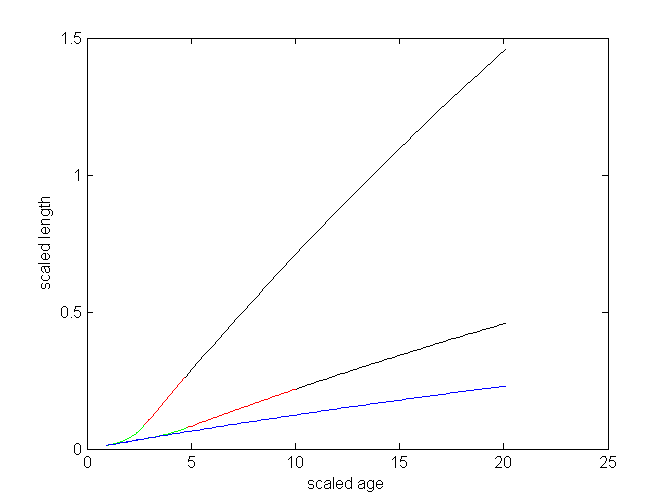

Contents
Demonstrates the use of get_ts and get_tj
% metabolic acceleration between stages s and j at constant f % with vHb >= vHs >= vHj >= vHp % if vHb = vHs = vHj: standard DEB model % if vHb = vHs < vHj: maximum acceleration, given vHj % during acceleration {F_m}, {p_Am} and v increase with length % notice that K, f, [E_m], g, r_B are not affected by this increase % scaling of lengths is always with respect to embryo parameter values % lT = 0 during embryo stage (no heating or osmotic work)
set parameters and f
g = 0.0424; % [E_G] v/ kap {p_Am}, energy investment ratio k = 0.0118; % k_J/ k_M, ratio of maturity and somatic maintenance rate coeff lT = .0; % {p_T}/[p_M]Lm, scaled heating length vHb = 2.52e-6; % v_H^b = U_H^b g^2 kM^3/ (1 - kap) v^2; U_B^b = M_H^b/ {J_EAm}, mat at birth: start of feeding vHs = 7.40e-5; % v_H^s = U_H^s g^2 kM^3/ (1 - kap) v^2; U_B^s = M_H^s/ {J_EAm}, mat at settlemen: start of acceletation vHj = 8.88e-4; % v_H^j = U_H^j g^2 kM^3/ (1 - kap) v^2; U_B^j = M_H^j/ {J_EAm}, mat at metamorphosis: end of acceleration vHp = 3.13e-2; % v_H^p = U_H^p g^2 kM^3/ (1 - kap) v^2; U_B^p = M_H^p/ {J_EAm}, mat at puberty: ceasing of maturation, start of reproduction pars_ts = [g; k; lT; vHb; vHs; vHj; vHp]; % parameters for get_ts pars_tj = [g; k; lT; vHb; vHj; vHp]; % parameters for get_tj, for comparison (vHs = vHb) pars_tb = [g; k; vHb]; % parameters for get_tb f = 0.8;
get scaled ages, lengths, growth rates
% first use get_ts (vHs > vHb) [ts tj tp tb ls lj lp lb li rj rB info] = get_ts(pars_ts, f); if info ~=1 fprintf('warning in get_ts: no convergence\n') end ti = 2 * tp; % maximum scaled age for plotting t_bs = linspace(tb, ts, 50)'; % scaled ages between b and s t_sj = linspace(ts, tj, 50)'; % scaled ages between s and j t_jp = linspace(tj, tp, 50)'; % scaled ages between j and p t_pi = linspace(tp, ti, 50)'; % scaled ages after p l_bs = f - lT - (f - lT - lb) * exp(- rB * (t_bs - tb)); % von Bert growth between b and s l_sj = ls * exp (rj * (t_sj - ts)/ 3); % exponential growth between s and j l_jp = li - (li - lj) * exp(- rB * (t_jp - tj)); % von Bert growth between j and p l_pi = li - (li - lp) * exp(- rB * (t_pi - tp)); % von Bert growth between p and i % compare with get_tj (vHs = vHb) [tj_j tp_j tb_j lj_j lp_j lb_j li_j rj_j rB_j info] = get_tj(pars_tj, f); if info ~=1 fprintf('warning in get_tj: no convergence\n') end t_bj = linspace(tb_j, tj_j, 50)'; t_jp_j = linspace(tj_j, tp_j, 50)'; t_pi_j = linspace(tp_j, ti, 50)'; l_bj = lb_j * exp (rj_j * (t_bj - tb_j)/ 3); % exponential growth between b and j l_jp_j = li_j - (li_j - lj_j) * exp(- rB_j * (t_jp_j - tj_j)); % von Bert growth between j and p l_pi_j = li_j - (li_j - lp_j) * exp(- rB_j * (t_pi_j - tp_j)); % von Bert growth between p and i % compare with no acceleration [tb_b lb_b info] = get_tb(pars_tb, f); if info ~=1 fprintf('warning in get_tb: no convergence\n') end t_bi = linspace(tb_b, ti, 100)'; rB_b = 1/ 3/ (1 + f/ g); l_bi = f - lT - (f - lT - lb_b) * exp(- rB_b * (t_bi - tb_b)); % von Bert growth between b and i
plotting
close all plot(t_bs, l_bs, 'b', t_sj, l_sj, 'g', t_jp, l_jp, 'r', t_pi, l_pi, 'k', ... t_bj, l_bj, 'g', t_jp_j, l_jp_j, 'r', t_pi_j, l_pi_j, 'k', ... t_bi, l_bi, 'b') xlabel('scaled age') ylabel('scaled length')